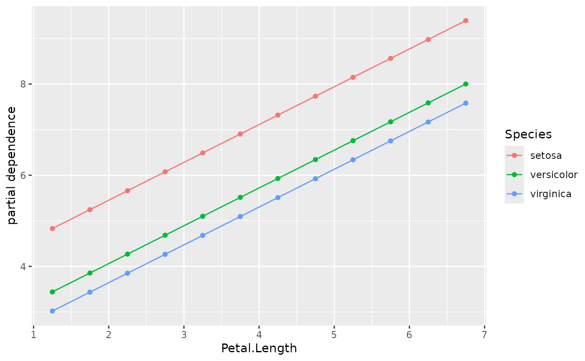
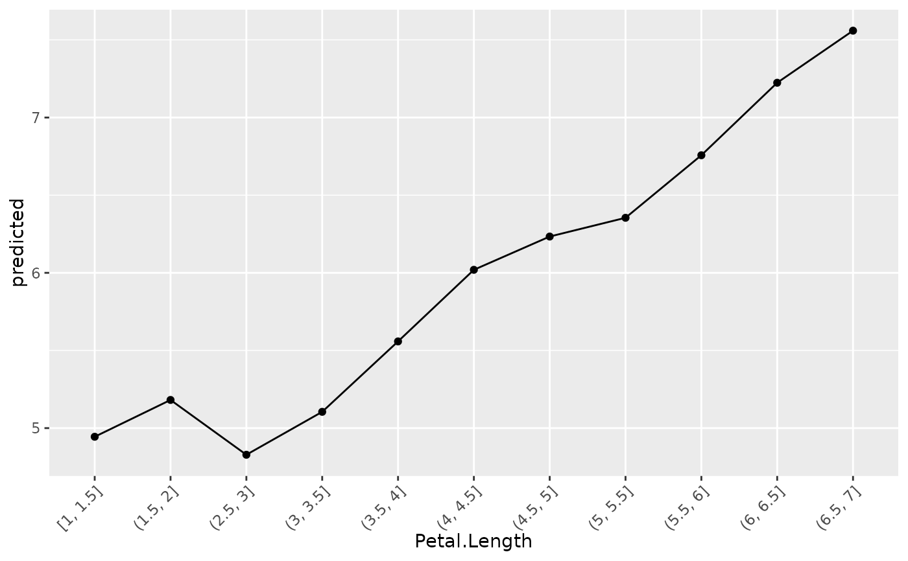
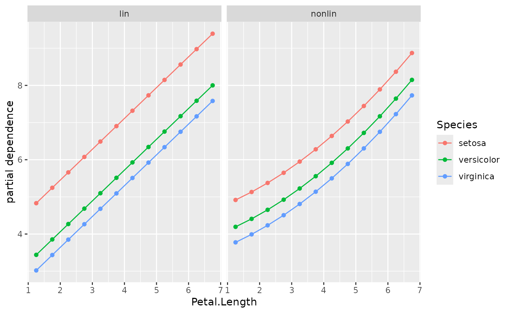
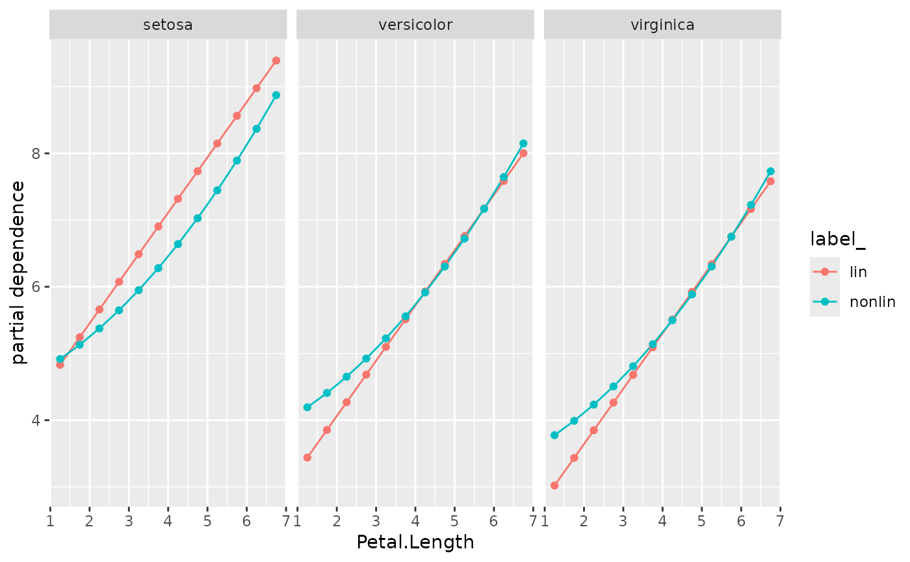
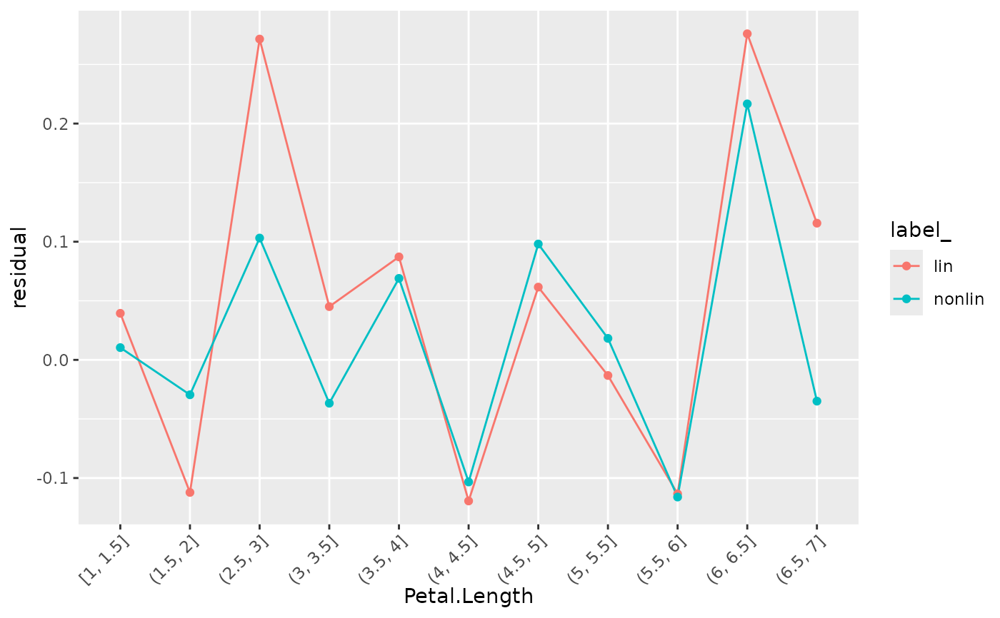

Calculates different types of profiles across covariable values. By default, partial dependence profiles are calculated (see Friedman). Other options are profiles of ALE (accumulated local effects, see Apley), response, predicted values ("M plots" or "marginal plots", see Apley), and residuals. The results are aggregated either by (weighted) means or by (weighted) quartiles.
Note that ALE profiles are calibrated by (weighted) average predictions. In contrast to the suggestions in Apley, we calculate ALE profiles of factors in the same order as the factor levels. They are not being reordered based on similiarity of other variables.
light_profile(x, ...)
# Default S3 method
light_profile(x, ...)
# S3 method for class 'flashlight'
light_profile(
x,
v = NULL,
data = NULL,
by = x$by,
type = c("partial dependence", "ale", "predicted", "response", "residual", "shap"),
stats = "mean",
breaks = NULL,
n_bins = 11L,
cut_type = c("equal", "quantile"),
use_linkinv = TRUE,
counts = TRUE,
counts_weighted = FALSE,
v_labels = TRUE,
pred = NULL,
pd_evaluate_at = NULL,
pd_grid = NULL,
pd_indices = NULL,
pd_n_max = 1000L,
pd_seed = NULL,
pd_center = c("no", "first", "middle", "last", "mean", "0"),
ale_two_sided = FALSE,
...
)
# S3 method for class 'multiflashlight'
light_profile(
x,
v = NULL,
data = NULL,
type = c("partial dependence", "ale", "predicted", "response", "residual", "shap"),
breaks = NULL,
n_bins = 11L,
cut_type = c("equal", "quantile"),
pd_evaluate_at = NULL,
pd_grid = NULL,
...
)An object of class "flashlight" or "multiflashlight".
Further arguments passed to formatC() in forming the
cut breaks of the v variable.
The variable name to be profiled.
An optional data.frame.
An optional vector of column names used to additionally group the results.
Type of the profile: Either "partial dependence", "ale", "predicted", "response", or "residual".
Deprecated. Will be removed in version 1.1.0.
Cut breaks for a numeric v. Used to overwrite automatic binning via
n_bins and cut_type. Ignored if v is not numeric.
Approximate number of unique values to evaluate for numeric v.
Ignored if v is not numeric or if breaks is specified.
Should a numeric v be cut into "equal" or "quantile" bins?
Ignored if v is not numeric or if breaks is specified.
Should retransformation function be applied? Default is TRUE.
Should observation counts be added?
If counts = TRUE: Should counts be weighted by the
case weights? If TRUE, the sum of w is returned by group.
If FALSE, return group centers of v instead of labels.
Only relevant for types "response", "predicted" or "residual" and if v
is being binned. In that case useful, for instance, if different flashlights
use different data sets and bin labels would not match.
Optional vector with predictions (after application of inverse link).
Can be used to avoid recalculation of predictions over and over if the functions
is to be repeatedly called for different v and predictions are computationally
expensive to make. Not implemented for multiflashlight.
Vector with values of v used to evaluate the profile.
Only relevant for type = "partial dependence" and "ale".
A data.frame with grid values, e.g., generated by expand.grid().
Only used for type = "partial dependence".
A vector of row numbers to consider in calculating partial dependence profiles and "ale".
Maximum number of ICE profiles to calculate (will be randomly
picked from data) for partial dependence and ALE.
Integer random seed used to select ICE profiles for partial dependence and ALE.
How should ICE curves be centered?
Default is "no".
Choose "first", "middle", or "last" to 0-center at specific evaluation points.
Choose "mean" to center all profiles at the within-group means.
Choose "0" to mean-center curves at 0. Only relevant for partial dependence.
If TRUE, v is continuous and breaks
are passed or being calculated, then two-sided derivatives are calculated
for ALE instead of left derivatives. More specifically: Usually, local effects
at value x are calculated using points in \([x-e, x]\).
Set ale_two_sided = TRUE to use points in \([x-e/2, x+e/2]\).
An object of class "light_profile" with the following elements:
data A tibble containing results.
by Names of group by variable.
v The variable(s) evaluated.
type Same as input type. For information only.
Numeric covariables v with more than n_bins disjoint values
are binned into n_bins bins. Alternatively, breaks can be provided
to specify the binning. For partial dependence profiles
(and partly also ALE profiles), this behaviour can be overwritten either
by providing a vector of evaluation points (pd_evaluate_at) or an
evaluation pd_grid. By the latter we mean a data frame with column name(s)
with a (multi-)variate evaluation grid.
For partial dependence, ALE, and prediction profiles, "model", "predict_function", "linkinv" and "data" are required. For response profiles its "y", "linkinv" and "data". "data" can also be passed on the fly.
light_profile(default): Default method not implemented yet.
light_profile(flashlight): Profiles for flashlight.
light_profile(multiflashlight): Profiles for multiflashlight.
Friedman J. H. (2001). Greedy function approximation: A gradient boosting machine. The Annals of Statistics, 29:1189–1232.
Apley D. W. (2016). Visualizing the effects of predictor variables in black box supervised learning models.
fit_lin <- lm(Sepal.Length ~ ., data = iris)
fl_lin <- flashlight(model = fit_lin, label = "lin", data = iris, y = "Sepal.Length")
# PDP by Species
plot(light_profile(fl_lin, v = "Petal.Length", by = "Species"))

# Average predicted
plot(light_profile(fl_lin, v = "Petal.Length", type = "pred"))

# Second model with non-linear Petal.Length effect
fit_nonlin <- lm(Sepal.Length ~ . + I(Petal.Length^2), data = iris)
fl_nonlin <- flashlight(
model = fit_nonlin, label = "nonlin", data = iris, y = "Sepal.Length"
)
fls <- multiflashlight(list(fl_lin, fl_nonlin))
# PDP by Species
plot(light_profile(fls, v = "Petal.Length", by = "Species"))

plot(light_profile(fls, v = "Petal.Length", by = "Species"), swap_dim = TRUE)

# Average residuals (calibration)
plot(light_profile(fls, v = "Petal.Length", type = "residual"))
